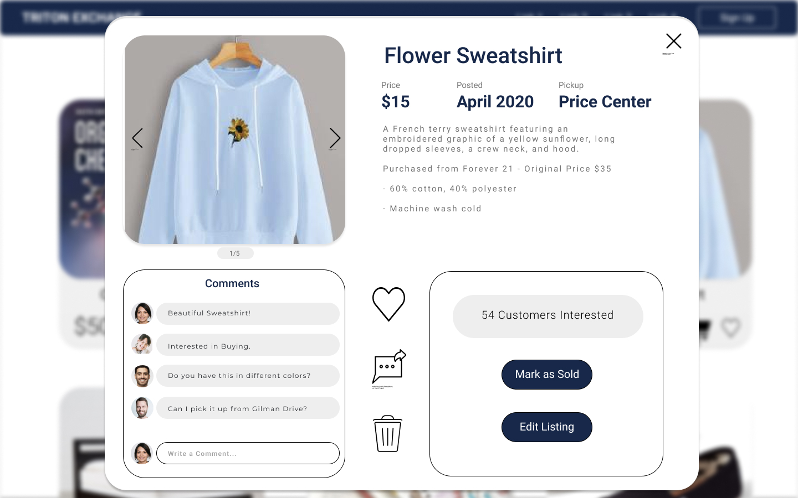
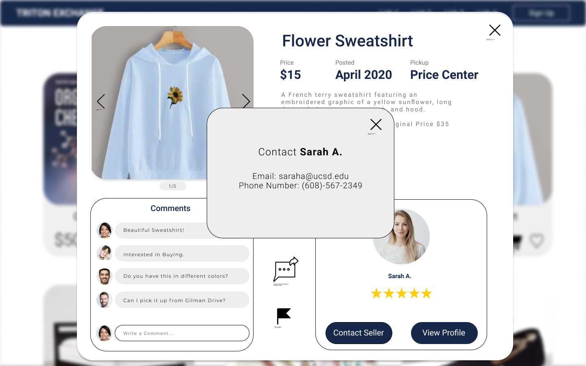
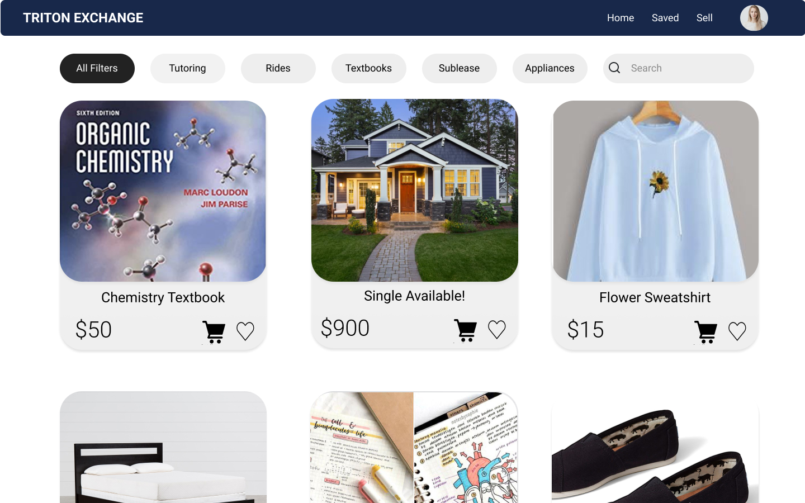
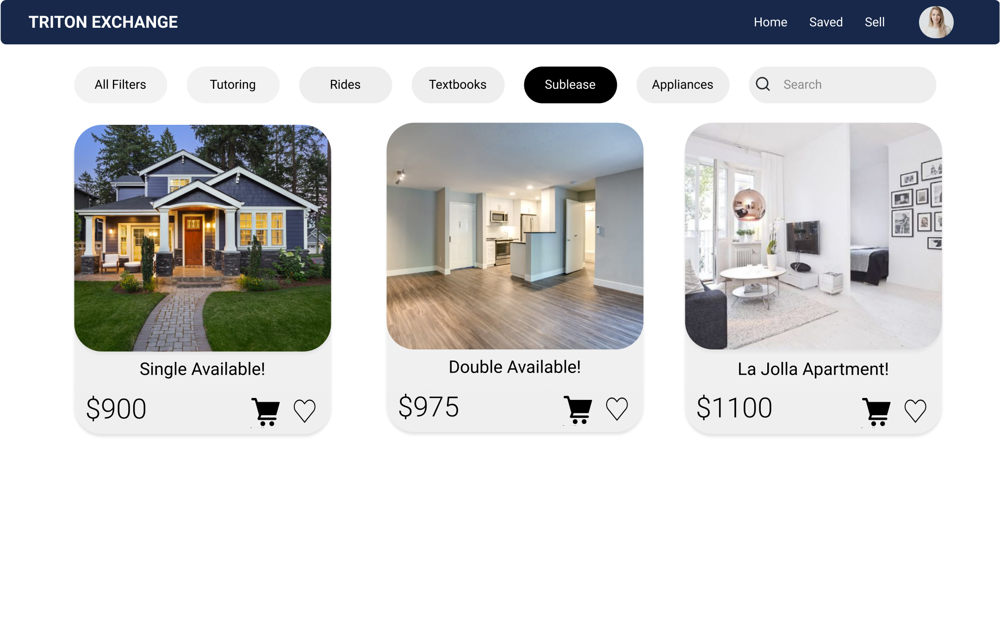
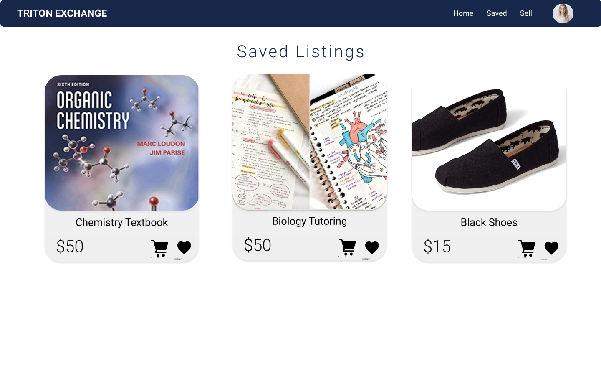
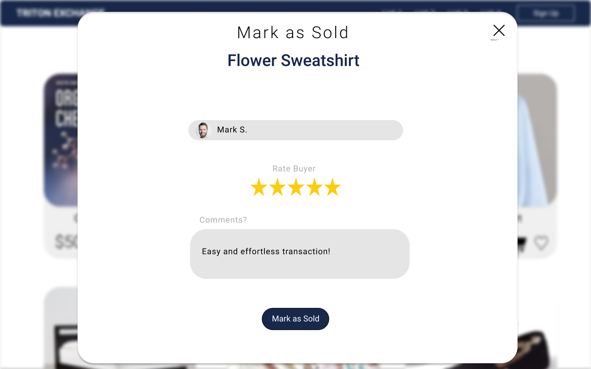
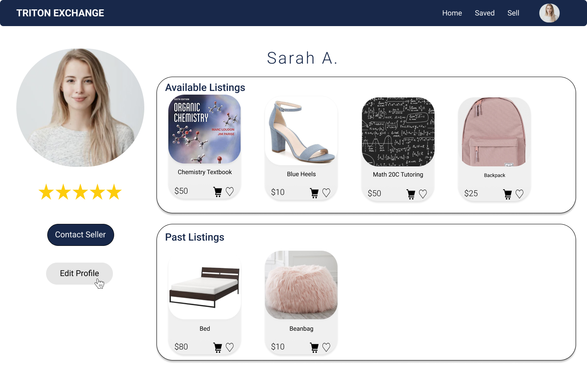
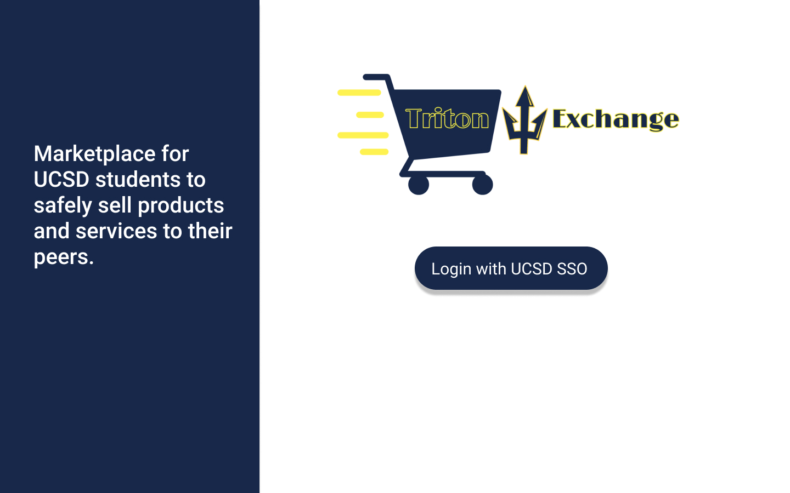

ABOUT THIS PROJECT








Slideshow of mock designs I created using Figma. Visit the website to view the final implemented UI.
Previous
Next
Triton exchange is a web application that aims to solve the issue of the lack of centralized and trustworthy online marketplaces for UC San Diego. This web app equipped with UCSD Single Sign-On and user ratings, to provide a place where the UCSD community can feel safe when shopping. Numerous other features, like reporting listings and saving listings, makes the app more advanced and attractive than traditional school online marketplaces.
My contributions to this project included designing the User Interface of the website as well as working with my front-end team to implement the designs using React, Typescript, and Bootstrap.
- I started by using Figma to create mockups of every page of the application. To create the mockups, I used my own creativity as well as inspiration from dribbble.com to come up with a sleek, clean, and simple-to-use user interface. This helped to set guidelines for the implementation process and create consistency throughout my team when it came to colors, fonts, sizes, etc.
- I then worked with my front-end team to implement the designs I created. I used React to create various reusable components, Bootstrap to add extra styling, and Typescript for more efficient development. Specifically, I worked on implementing the Homepage, Saved Page, and Selling/Rating Pages.
- Lastly, I connected the back-end with the front-end of the application by creating and using various REST API endpoints to retrieve and store data into the DynamoDB Database. Throughout this process, I learned about dynamic rendering, stateful components, and HTTP Requests.
- Throughout this process, I utilized Agile development best practices including following a sprint plan, continous integration, and feature prioritization.